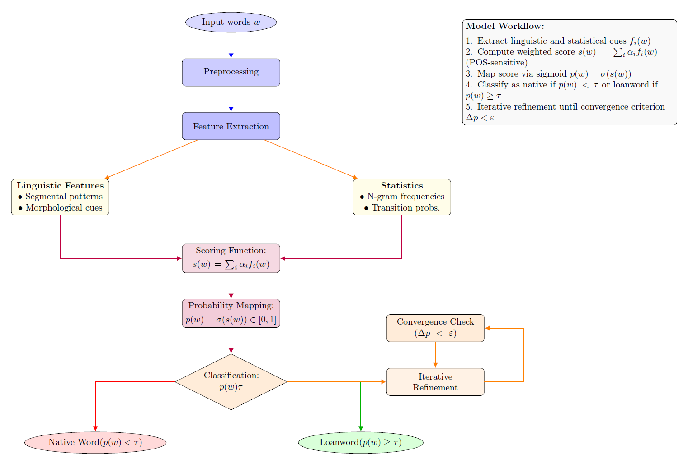
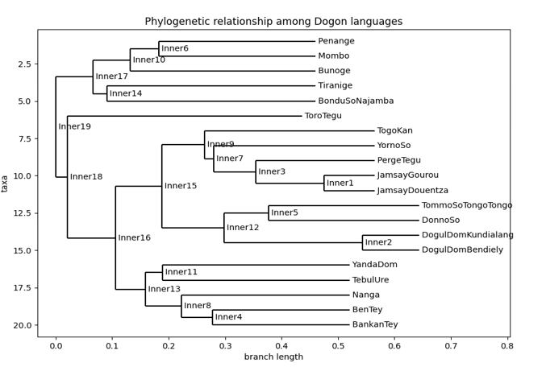

I propose an unsupervised method for the reconstruction of protoforms i.e., ancestral word forms from which modern language forms are derived.
While prior work has primarily relied on probabilistic models of phonological edits to infer protoforms from cognate sets, such approaches are limited by
their predominantly data-driven nature. In contrast, my model integrates data-driven inference with rule-based heuristics within an evolutionary optimization
framework. This hybrid approach leverages on both statistical patterns and linguistically motivated constraints to guide the reconstruction process.
I evaluate our method on the task of reconstructing Latin protoforms using a dataset of cognates from five Romance languages.
Experimental results demonstrate substantial improvements over established baselines across both character-level accuracy and phonological plausibility metrics.

I propose an unsupervised method for detecting loanwords i.e., words borrowed from one language into another. While prior work has primarily relied on
language-external information to identify loanwords, such approaches can introduce circularity and constraints into the historical linguistics workflow.
In contrast, my model relies solely on language-internal information to process both native and borrowed words in monolingual and multilingual wordlists.
By extracting pertinent linguistic features, scoring them, and mapping them probabilistically,I iteratively refine initial results by identifying and
generalizing from emerging patterns until convergence. This hybrid approach leverages both linguistic and statistical cues to guide the discovery process.
I evaluate the method on the task of isolating loanwords in datasets from six standard Indo-European languages: English, German, French, Italian, Spanish,
and Portuguese. Experimental results demonstrate that my model outperforms baseline methods, with strong performance gains observed when scaling to
cross-linguistic data.

In this project, I explore the application of computational tools to historical linguistics, specifically in the detection of cognates across languages,
by presenting the major lines of an early workflow that defines a baseline model. Focusing on the Dogon languages, I present the processes followed for the
study: preparing raw linguistic data for automated analysis, including data cleaning, formatting, and segmentation. The LexStat model is employed for cognate
detection, producing results that align with proposed historical linguistic analysis, including phonetic alignment and phylogenetic tree construction.
These initial results offer insights into the evolution and diversification of the various Dogon languages, with potential implications for resolving
difficulties in establishing adequate phylogenetics of the group.
